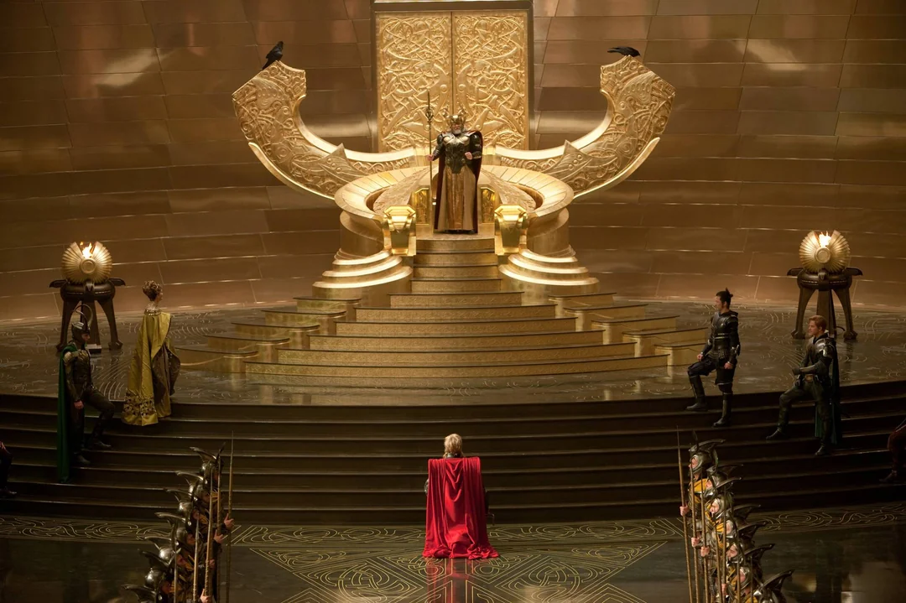
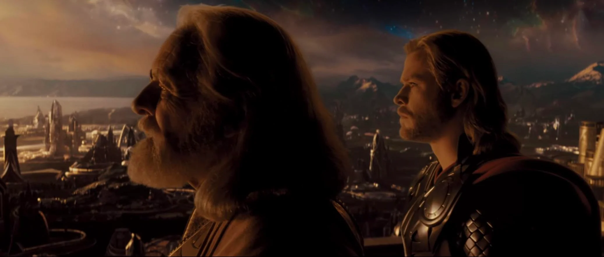
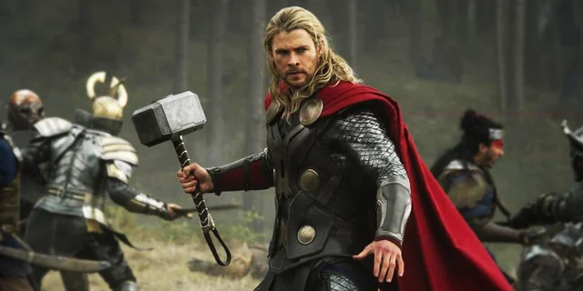
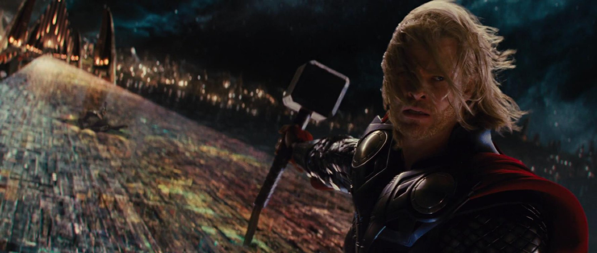

Made with Mobirise
Free Website Designer Software构图在线展示
图片来源：电影《Thor》（2011）
场景描述：阿斯加德王座厅中，奥丁站在金色王座上，雷神索尔跪在中央台阶前。
构图分析：
这个画面以奥丁的王座为中心轴，左右两侧的阶梯、守卫与建筑细节完全对称，形成稳定而庄严的视觉结构。中心人物（奥丁与索尔）处在画面的垂直中线，使观众的注意力自然聚焦在他们之间的权力关系。
金色调的背景与对称布局结合，营造出「神圣、权威、秩序」的氛围，强化了父与子的对比与王权主题。
视觉效果：
对称构图带给观众一种平衡、完整与宏伟的感觉，常用于表现王室、宗教或英雄题材中的“秩序与力量”。

图片来源：电影《Thor》（2011）
场景描述：奥丁与索尔并肩眺望阿斯加德的天空与城市。
构图分析：
摄影机位置略低，仰拍两位主角，使他们显得高大、庄严且充满力量。背景的天空与城市延伸开来，强化了角色的神性与史诗感。
视觉效果：
低角度构图常用于表现权威、尊贵或英雄气势，让观众产生仰视与敬畏的感觉。

图片来源：电影《Thor：The Dark World》（2013）
场景描述：索尔手持雷神之锤，站在战场中央，身后战士交锋，战火弥漫。
构图分析：
画面采用三分法与对角线结合的构图方式。索尔位于画面右侧三分线略偏中央的位置，成为视觉焦点；他伸出的手臂与锤子形成一条从左下至右上的对角线，使画面充满动势与力量感。背景的士兵与森林形成空间层次，强化了前景人物的突出地位。
这种构图手法常用于表现英雄人物的英勇姿态与即将出击的紧张氛围，传达出“力量、决心与战斗精神”的主题。
视觉效果：
三分法的稳定与对角线的动感结合，让画面兼具平衡与张力。雷神的红色披风与冷色调背景形成鲜明对比，使人物更具视觉冲击力，营造出史诗级的英雄气场。

图片来源：电影《Thor》（2011）
场景描述：索尔站在阿斯加德的彩虹桥上，手持雷神之锤，面对敌人，身后是璀璨的神域之城。
构图分析：
镜头采用低角度拍摄，从下方向上仰视索尔，突出他的威严与英雄气场。人物位于画面右侧三分线位置，身体与手中锤子形成一条对角线，增强了画面的动感与紧张氛围。背景的阿斯加德建筑与夜空构成深远的空间透视，强化了神话世界的宏伟感。
这种低角度与对角线结合的构图手法，常用于塑造英雄角色的力量与宿命感，传达出“不可动摇的信念与王者姿态”。
视觉效果：
仰视角度让索尔显得高大而神圣，红披风在深色背景中格外醒目，形成强烈的视觉对比。整体画面充满史诗感与戏剧张力，让观众感受到雷神的神力与决心。

Made with Mobirise
Free Website Designer Software